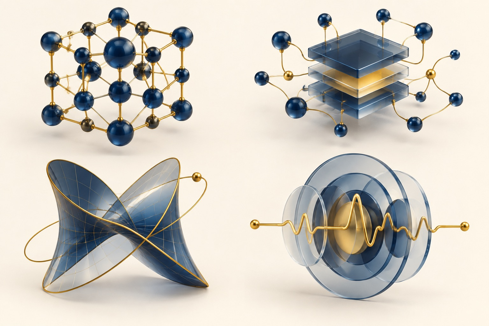

A day for students, faculty, and industry to share AI for Health research, meet collaborators, and see what is happening across UC Davis and UC Davis Health.
First of its kind for the CS AI for Health Initiative.
The CS AI for Health Initiative (CS AI4H) launched in August 2026. Its goal is to form a community of practice around AI for Health research and education, connecting computational talent at UC Davis with basic and translational research at UC Davis Health.
This symposium brings students and faculty together at UC Davis Health's Aggie Square to share their work, network, and learn from each other. Invited talks, student presentations, posters, and networking breaks give several ways to take part.
If you work in AI for Health, or would like to, we invite you to register for this free event.
One afternoon of ideas and connections. Tap a session to explore.
1–6 pm · Pacific time · Aggie Square, Assembly Room
Tentative program. The time breakdown below is illustrative; session times will be confirmed closer to the event.
Opening remarks and an introduction to the CS AI for Health community.
Perspectives from computer science and clinical research.
Meet researchers and reconnect with colleagues.
Short research talks, with priority given to students and junior faculty.
Explore recent and in-progress work, from methods to clinical applications.
Continue the conversations and find collaborators across campus and industry.
Indicate on the registration form whether you want a talk slot or a poster.

Biology, medicine, and health science questions where AI plays a role.
Models, algorithms, benchmarks, data pipelines, and evaluation.
Theoretical approaches underpinning AI systems used in health.
Deployment, clinical workflows, validation, and outcomes.
Talks from students and junior faculty are especially welcome. Industry representatives are highly encouraged to register and attend.
Free to attend. Please register early.
Registration closes once we reach the maximum number of attendees, so register as soon as you can and say on the form if you want to give a talk or show a poster. Presentation slots are very limited, and the committee may need to select from submissions if interest is high.